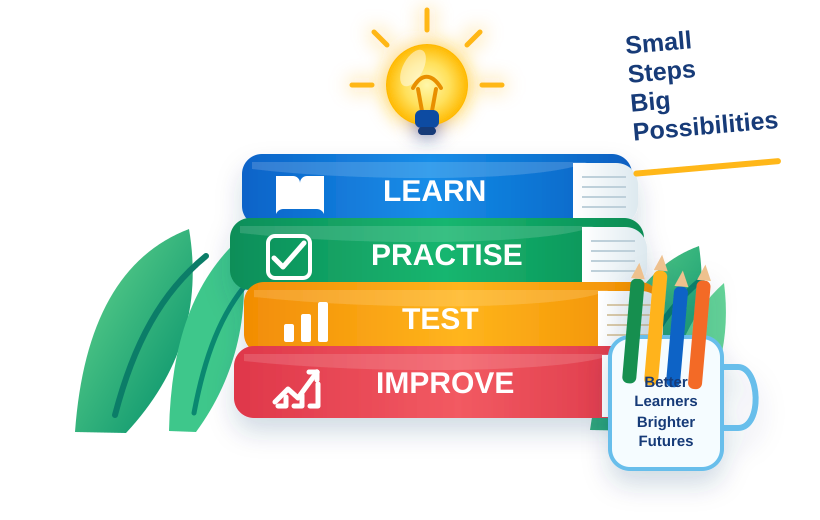

Curriculum aligned
Age-appropriate learning from Kindy to Year 6.
Clear lessons, focused practice and real-style tests that help children build skills with confidence.

Begin at the right level and move forward with confidence.
One clear place for every core subject.
Number, measurement and problem solving.
Writing, grammar, spelling and language.
Fluency, comprehension and meaning.
Word meaning, spelling and confident use.
Explore living things, Earth and everyday science.
Australia, places, nature and the wider world.
Focused pathways for important school milestones.
Age-appropriate learning from Kindy to Year 6.
See what has improved and what to practise next.
NAPLAN, OC and Selective preparation in one place.
A clean learning environment without distracting design.
Choose a year and begin with one subject today.